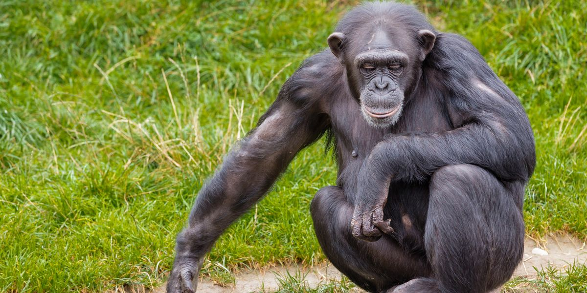

(Pan Paniscus)
Es muy similar en aspecto al chimpancé común, pero su rostro es negro, sus orejas más pequeñas y sus piernas más largas. Una característica llamativa es que existe una gran diferenciación facial entre los ejemplares, como sucede con los humanos.Los chimpancés viven en comunidades formadas por varias docenas de individuos, y se han habituado a vivir en las junglas, los bosques y las sabanas de África. Aunque normalmente caminan utilizando las cuatro extremidades (a cuatro patas), son capaces de levantarse y caminar erguidos.
1.Miden entre 1,20 y 1,70 metros y suelen pesar entre 30 y 70 kilos. 2.Su rama evolutiva se separá de la de los humanos hace aproximadamente 7 millones de años. Son capaces de transmitir toda clase de emociones a través de gestos y posturas. Suelen caminar a cuatro patas, apoyándose sobre sus nudillos, pero también pueden caminar en posición vertical. Son altamente sociables y viven en comunidades de hasta 150 ejemplares 3.Su alimentación incluye frutas, hojas y otras partes de las plantas, miel, insectos (especialmente termitas) y ocasionalmente huevos y carne. Comen con las manos y son capaces de lanzar objetos y crear herramientas. 4.Viven 45 años de media y pueden alcanzar los 60 años. 5.Los bonobos habitan la orilla izquierda del mismo río. Ambas especies viven en bosques tropicales y subtropicales tanto húmedos como secos, bosques galería y sabanas de veintión países del centro de África (en el caso del chimpancé común) y bosques de República Democrática del Congo (en el caso del chimpancé pigmeo).